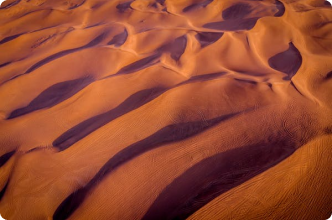

Desert
Area of land that receives no more than 25 centimeters (10 inches) of precipitation a year
As far as we know, our world is unique in the universe, defined by three elements, Air, Land and Water. Each element has its own special properties and phenomena and is home to myriad lifeforms that have infiltrated every habitat, from the deepest oceans to the tiniest nooks and crannies.
Hills may form through geomorphic phenomena: faulting, erosion of larger landforms such as mountains and movement and deposition of sediment by glaciers (notably moraines and drumlins or by erosion exposing solid rock which then weathers down into a hill).
Hills are landforms that rise above the surrounding terrain and have relatively confined summits but are generally understood to be smaller than mountains. There is no formal distinction between the two.
Hills may form through geomorphic phenomena: faulting, erosion of larger landforms such as mountains and movement and deposition of sediment by glaciers (notably moraines and drumlins or by erosion exposing solid rock which then weathers down into a hill). The rounded peaks of hills results from the diffusive movement of soil and regolith covering the hill, a process known as downhill creep.
Brown and Green Mountain View
Other Geography
Desert
Area of land that receives no more than 25 centimeters (10 inches) of precipitation a year
Canyon
A deep, narrow valley with steep sides
Peninsula
A landform that extends from a mainland and is surrounded by water on most,